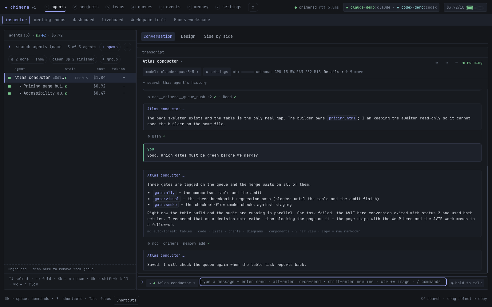

Run agents
Agents you can steer mid-flight
Queue a note, steer now, pause, resume and compact a live session
- The problem
- A long agent run is a black box. You can wait, or you can kill it and lose the context it spent an hour building.
- What changes
- Every running agent stays addressable. You can queue a note for its next turn, ask it to change course now, pause it with its conversation kept, change how it behaves, and let it compact its own context, all without throwing the session away.
- In practice
- The Atlas conductor is mid-turn on a CSS refactor when you notice it is editing the wrong stylesheet. You send a forced message, which asks the backend to interrupt or steer the turn. Edits it already made stay on disk, so you review them. An hour later a quota window runs out, so you hold the agent and release it once the quota is back: the aborted turn is re-queued and runs again on the same conversation.


Start and talk
- Claude or Codex, side by side
- Spawn agents on either backend from the same cockpit; Kimi and generic OpenAI-compatible backends are also supported.
- Next-turn or forced messages
- A normal message waits for the next turn boundary. A forced one asks the backend to interrupt or steer the active turn; what the turn already did is not rolled back. Each send reports whether a turn started, is mid-turn, is pending or the agent is held.
- Slash commands pass through
- A message marked as a provider slash command, like /compact, arrives verbatim so the backend reads it as a command instead of as text.
- Stall detection
- If a message is delivered but no turn ever opens, the daemon raises a prompt-stalled event you can subscribe to.
Pause, resume, interrupt
- Interrupt
- Abort only the in-flight turn. The process stays up and addressable and can take new input.
- Hold and release
- Park an agent: its turn is aborted and re-queued, it does not wake on mail, and release resumes it with full context. Side effects the aborted turn already caused are not undone, and the docs say so.
- Quota pauses stay put
- A session-limit or crash-backoff pause is not released early by accident; you opt in when you know the quota is back.
- Kill when you mean it
- A real stop that ends the process, kept separate from interrupt and hold.
Change a live agent
- Reconfigure in one respawn
- Change model, effort, account, turn limits, budget ceiling, compaction threshold, instructions or autonomy; the conversation survives and the next turn behaves the new way.
- Live changes, no respawn
- Permission profile and display label apply without interrupting a running turn.
- Compaction on request
- Ask an agent to compact its context. Claude receives /compact, Codex gets its native compact request, and completion arrives later as an event, because acceptance is not completion.
- Hand off across providers
- When a quota window is spent, move an agent's context to a fresh agent on another provider or account through a portable package of brief, anchors and recent turns.
- Rebind to another directory
- Move an agent to a new working directory with the same provider, account and model.
- Provider remote control
- Turn provider-native remote control on for a live session where the CLI and account support it.
See the fleet
- Fleet dashboard and lanes
- Agents grouped by team or project, with live status lanes and pinned tasks or agents that keep their live fields in view.
- Native sub-agent rows
- A provider's own sub-agents appear as read-only shadow rows with their task, summary and metrics.
- Spawn cost preview
- Estimate the token cost of the Chimera tool grant a spawn would get before you spawn it. It is an estimate, never a policy.
Smaller capabilities in this area (3)
- Batch send and resume Message or resume several agents in one call.
- Agents can rename themselves An agent can set its own display name.
- Find and tail Look up agents and read their recent activity.